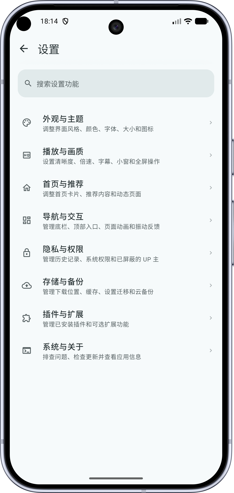

用了一年才发现，BiliPai 藏着这 5 个大多数人没碰过的开关
BiliPai 作为 B 站第三方客户端的标杆，很多人用它只是看视频。但它藏着一堆冷门的高级设置——Material You 动态取色、弹幕增强插件、定时关闭、系统媒体中心联动、JSON 规则插件。本文把这些功能的入口和真正有用的场景挖出来。
你以为 BiliPai 就是个"能看 B 站视频的第三方播放器"？去它的官网翻一下功能列表就知道远不止于此。说实话我最初也是这么想的，从下载拿装好之后一直用默认设置刷 feed、看番、调调倍速就完事。直到某天深夜翻设置翻到凌晨三点，才发现这玩意儿藏得真深——从外观定制到弹幕玩法，从定时助眠到系统级媒体联动，一堆功能官方都不宣传，菜单入口埋得七拐八绕。
今天把我挖到的 5 个冷门功能整理出来，每个都附带上具体的菜单路径和"什么人真能用得上"的判断，省得你再跟我一样瞎翻一晚上。
一、主题色能跟着你的手机壁纸实时变，而且不止一种风格
先说最有"哇"感的那个。Material You 动态取色这个东西，Android 12+ 自带，但大多数 App 都是应付了事——要么只支持主色取色，要么根本没做。BiliPai 不一样，它完整接进去了，而且还在 Material 3 之上叠加了三套主题风格。
开启路径：设置 → 外观与主题 → 主题色 → 跟随系统（Material You）。前提是 Android 12+ 且系统没被厂商阉割（早期 MIUI 和 ColorOS 用户可能享受不到）。设置好之后，你每次换手机壁纸，BiliPai 的主色、次色、强调色、背景色都会自动跟着变——不是那种生硬的纯色替换，是一整套协调的配色方案，视觉统一得不像话。

更绝的是那三套主题风格开关：设置 → 外观 → 主题风格，可以在 Material 3 默认、Miuix（小米风格组件）、Compose Cupertino（iOS 风格组件）之间随时切换，不需要重启 App，即时生效。我个人习惯 Material 3 默认，圆角大、色彩柔和；喜欢紧凑秩序感的可以试试 Miuix；iOS 用户觉得 Android 原生组件看着别扭的，Cupertino 那套能让你产生"我是不是在刷 iPhone"的错觉。
什么人用得上？ 喜欢折腾外观的、对界面协调度有强迫症的、换壁纸频率高的用户。什么人可以无视？只用深色模式、从来不在意配色的用户。
二、弹幕增强插件：关键词过滤、防遮挡、重复折叠，一个插件解决所有弹幕痛点
弹幕是 B 站的灵魂，但有时候也烦——剧透、广告、满屏同一条"前方高能"，或者弹幕把画面中央的人物脸都挡了。BiliPai 内置了一个弹幕增强插件，默认是关闭的，得手动去开。
路径：设置 → 插件中心 → 弹幕增强 → 启用。启用之后直接多出一堆实用功能：
- 关键词过滤：把"剧透""广告""抽奖"这类词加进去，含这些词的弹幕直接屏蔽。追番的同学强烈推荐开这个，悬疑推理类番剧被剧透一条真的想砸手机。
- 高亮关键词：反过来用，把 UP 主名字或你感兴趣的特定关键词加进去，命中的弹幕会被标红或加粗，你一眼就能看到。
- 防遮挡：弹幕自动避开画面中央区域，特别是人像和字幕位置。大屏用户（平板、折叠屏）开这个最有用，屏幕大弹幕也多，不开防遮挡真的挡脸。
- 重复弹幕折叠：完全相同的弹幕只显示一条，后面跟着"×N"。过年看拜年视频的时候这个功能能帮你省掉 80% 的视觉噪音。
- 弹幕密度调节：限制同时显示的弹幕数量，不喜欢太热闹的可以调到"稀疏"。
如果你还想更进一步——比如正则匹配、按弹幕长度过滤、按发送时间过滤——那就得上 JSON 规则插件了，那个是给进阶用户准备的，能写规则脚本，基本上想怎么过滤就怎么过滤，不过这块配置起来稍微有点门槛，建议先去BiliPai文档把规则语法过一遍。这个偏门入口埋在 设置 → 插件中心 → JSON 规则插件 里，需要自己写 JSON 或者导入别人分享的规则文件。
什么人用得上？ 追番怕剧透的、看教程想屏蔽无关弹幕的、大屏用户。什么人可以无视？从来不开弹幕的、只看冷门视频没弹幕可过滤的。
三、定时关闭：睡前助眠党必备，而且时间到了会温柔地淡出不是粗暴断音
这个功能我是在听视频模式里发现的——就是 BiliPai 那个只听声音不看画面的"后台听"模式。路径：听视频模式 → 右下角定时关闭按钮，点击后弹出时间选择器，有 5/10/15/30/60 分钟几个预设，也能自定义（比如 45 分钟、90 分钟）。
它好在哪？不是选好就不管了。倒计时中途你点右上角的倒计时数字，可以延长 10 分钟、取消或者改时间。最关键的是时间到了不会粗暴地直接断音——会先渐渐淡出，像音量慢慢调小那样，然后停止播放、退出听视频模式。不会把你吵醒，也不会杀进程清后台，下次打开 BiliPai 还在。
睡前听 ASMR、白噪音、助眠音乐的同学，这个功能真的是刚需。我之前用其他视频 App 听助眠内容，睡着之后视频能放到天亮，手机电量从满电掉到自动关机，还发热。自从用了 BiliPai 的定时关闭，设置 15 分钟，基本上每次都在淡出的前几秒睡着。
四、系统媒体中心联动：锁屏、蓝牙耳机、Android Auto、智能手表全接上了
这个功能我之前完全没意识到 BiliPai 做了——因为它是默认开启的，没有专门的开关让你去开。只有当你用蓝牙耳机控制 BiliPai 的播放时，才会发现它真的接进了 Android 的全局媒体控制中心。
具体表现：
- 锁屏通知栏：锁屏状态下能看到当前播放视频的封面、UP 主和标题，还有上一首/暂停/下一首按钮、可拖动的进度条，甚至连定时关闭的剩余时间都显示。
- 蓝牙耳机按键：单击播放/暂停、双击下一首、三击上一首、长按快进/快退——取决于你的耳机型号。我用 AirPods 连接 Android，双击耳机柄就能切下一条视频，走路刷 B 站的时候特别方便。
- Android Auto / 车载：如果你的手机连了车载系统，BiliPai 会出现在车载媒体源列表里，可以用方向盘按键控制。当然开车的时候还是建议别刷视频画面，专心驾驶。
- 智能手表：部分 Wear OS 手表能看到正在播放的内容和基本控制。
这里顺便提几个边界行为，省得你以为是 bug：两个 App 同时播放的时候（比如听着 BiliPai 又开了音乐 App），Android 的音频焦点机制会自动暂停前一个；导航 App 开始播报时，BiliPai 会自动降低音量（ducking），播报完恢复；来电时自动暂停，通话结束后不会自动恢复（避免通话内容被录进视频）。这些都是正常行为。
想调整媒体会话相关设置的话，路径在 设置 → 后台与通知 → 媒体会话，可以改锁屏是否显示控件、耳机按键映射、通话恢复策略。
五、画质不解锁、TV 扫码失败？排查清单比你想的长
最后一个不是功能，是我翻了 FAQ 才搞懂的排查思路——很多人说"我用大会员登录了 BiliPai 怎么还是看不了 4K"，或者"用 BiliPai TV 版扫官方 App 的码扫不上"，其实原因可能不在 BiliPai，也不在 B 站。
画质问题按这个顺序查：先在官方 App 或网页版验证同一个视频能不能选到目标画质（排除视频源本身没有高画质）→ 确认大会员没过期 → 退出 BiliPai 重新登录一次 → 清除缓存（设置 → 存储与数据 → 清除缓存，不影响笔记和历史）→ 确认手机芯片支持 HEVC/AV1 解码（骁龙 7 系以上基本都支持）→ 更新 BiliPai 到最新版 → 换网络再试（Wi-Fi 和移动切换一下）。
TV 扫码问题也类似：BiliPai 端检查二维码是不是空白/模糊/屏幕暗，官方 App 端检查摄像头权限有没有给、光线够不够、摄像头能不能对焦、屏幕有没有反光、扫码框太小的话把 BiliPai 的二维码放大到全屏显示。实在不行换手机号+验证码登录，比扫码稳得多。
提醒一个坑：JSON 规则插件别乱装
最后说个小提醒——上面提到的 JSON 规则插件虽然强大，但它本质是运行在你设备上的脚本。如果你从网上随便找别人分享的 JSON 规则文件导入，理论上是有安全风险的。建议只从你信任的来源拿规则，或者自己写，别看到"过滤剧透神器"就下载。另外规则写错了（JSON 语法错误）会导致弹幕增强插件直接罢工——不是崩溃，是功能静默失效，排查起来有点烦。
收尾
写这篇文章的时候我一直在想，为什么 BiliPai 这个 App 能做到 100 多 MB 却不臃肿——因为它把那些"不是所有人都需要但真有人刚需"的功能都做成了可选插件，藏在深一点的菜单里而不是堆在首页。不像有些 App 生怕你不知道它有什么，全功能堆在首页，结果真正想找某个设置反而翻半天。
如果你跟我一样用了很久 BiliPai 但从来没碰过插件中心和外观设置，今天可以花十分钟试试——Material You 换个壁纸看颜色变化、开个弹幕关键词过滤、睡前设个定时关闭——说不定能把它从"只是个播放器"变成"真的好用的播放器"。毕竟一款好 App 的底线是"开箱能用"，上限是"把它用透"。对了，本文提到的这些隐藏功能和排查思路，在GitHub、Gitee、GitCode三个开源仓库里都能找到完整的原始文档和讨论，国内访问优先选 Gitee 或 GitCode，速度更快。